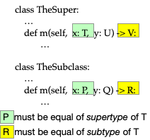
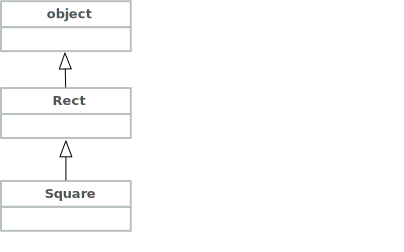
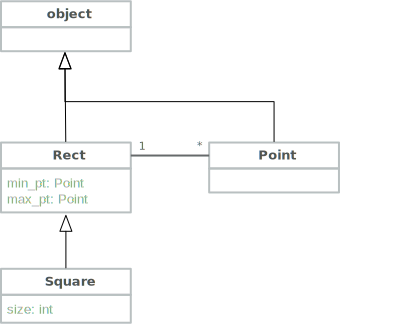
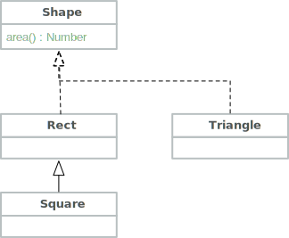

Class Hierarchies and Inheritance#
Subclasses#
Sometimes we need a specialized version of a class, or multiple variations on a class. Rather than modifying the existing class, we can create a new class that inherits from the existing class.
Suppose, for example, that we wanted a
class Square that is like a rectangle but
can be created from a single point and a size.
We can specify that a Square is a kind of
Rect:
Show code cell content
# Classes Point and Rect are repeated
# from the previous chapter so we can
# build on them. Point has a method
# "dist" that we use for area of triangles.
from numbers import Number
from math import sqrt
class Point:
"""An (x,y) coordinate pair"""
def __init__(self, x: Number, y: Number):
self.x = x
self.y = y
def __add__(self, d: "Point") -> "Point":
"""Point(x, y) + Point("""
x = self.x + d.x
y = self.y + d.y
return Point(x,y)
def move_to(self, new_x, new_y):
"""Change the coordinates of this Point"""
self.x = new_x
self.y = new_y
def dist(self, other: "Point") -> Number:
"""Euclidean distance"""
dx = self.x - other.x
dy = self.y - other.y
return sqrt(dx*dx + dy*dy)
def __str__(self) -> str:
"""Looks like (x, y)"""
return f"({self.x}, {self.y})"
def __repr__(self) -> str:
"""Looks like Point(x, y)"""
return f"Point({self.x}, {self.y})"
class Rect:
"""Rectangle from lower left corner to upper right."""
def __init__(self, xy_min: Point, xy_max: Point):
self.min_pt = xy_min
self.max_pt = xy_max
def area(self) -> Number:
"""Area is height * width"""
height = self.max_pt.x - self.min_pt.x
width = self.max_pt.y - self.min_pt.y
return height * width
def translate(self, delta: Point) -> "Rect":
"""New rectangle offset from this one by delta as movement vector"""
return Rect(self.min_pt + delta, self.max_pt + delta)
def __repr__(self) -> str:
return f"Rect({repr(self.min_pt)}, {repr(self.max_pt)}"
def __str__(self) -> str:
return f"Rect({str(self.min_pt)}, {str(self.max_pt)})"
class Square(Rect):
"""A Rectangle with equal length sides"""
def __init__(self, anchor: Point, size: Number):
self.min_pt = anchor
self.max_pt = self.min_pt + Point(size, size)
self.size = size
Square objects have the min_pt and max_pt
instance variables of Rect, plus a new
instance variable size.
All the methods of Rect are also available for
Square, including the magic methods like __str__.
p1 = Point(3, 5)
sq = Square(p1, 5)
print(sq)
Rect((3, 5), (8, 10))
Overriding#
Maybe we don’t want print(sq) to print a
string beginning with Rect. Maybe we want
Square to have its own __str__ method.
class Square(Rect):
"""A Rectangle with equal length sides"""
def __init__(self, anchor: Point, size: Number):
self.min_pt = anchor
self.max_pt = self.min_pt + Point(size, size)
self.size = size
def __str__(self) -> str:
return f"Square({str(self.min_pt)}, {self.size})"
The new __str__ method of Square overrides the
__str__ method of the Rect Now the same code as above
p1 = Point(3, 5)
sq = Square(p1, 5)
print(sq)
s2 = sq.translate(Point(2,2))
print(s2)
Square((3, 5), 5)
Rect((5, 7), (10, 12))
The first print command uses the new
__str__ method.
The translate method is still inherited from
Rect, and still returns a Rect object rather
than a Square, so the second print command
is printing that Rect object.
We can also add
new methods that are not present in Rect. For example, we
might simply want to add a method that returns the length
of a side:
Show code cell content
class Square(Rect):
"""A Rectangle with equal length sides"""
def __init__(self, anchor: Point, size: Number):
self.min_pt = anchor
self.max_pt = self.min_pt + Point(size, size)
self.size = size
def __str__(self) -> str:
return f"Square({str(self.min_pt)}, {self.size})"
def side(self) -> Number:
return self.size
## Within class Square as above
def side(self) -> Number:
return self.size
A method that is defined only in the Square subclass
can of course use instance variables that are likewise
only in that subclass. Now we can write
sq = Square(Point(2,2), 2)
sq.side()
2
We get the expected result, 2. However, if
we attempt to call side on a Rect object
that is not a Square object, we will get an error
message.
r = Rect(Point(2,2), Point(4,4))
r.side()
---------------------------------------------------------------------------
AttributeError Traceback (most recent call last)
Cell In[8], line 2
1 r = Rect(Point(2,2), Point(4,4))
----> 2 r.side()
AttributeError: 'Rect' object has no attribute 'side'
The Python debugger refers to both instance variables and methods
as attributes. In this case it looked for the
class of r and found it was a Rect, and it looked
in class Rect for method side and did not find it.
The inherited translate method still returns a Rect.
It seems more reasonable for
translation of a Square to give us a Square,
so we can again override the
inherited method with a more specialized version:
Show code cell content
class Square(Rect):
"""A Rectangle with equal length sides"""
def __init__(self, anchor: Point, size: Number):
self.min_pt = anchor
self.max_pt = self.min_pt + Point(size, size)
self.size = size
def __str__(self) -> str:
return f"Square({str(self.min_pt)}, {self.size})"
def side(self) -> Number:
return self.size
def translate(self, delta: Point) -> "Square":
return Square(self.min_pt + delta, self.size)
def translate(self, delta: Point) -> "Square":
return Square(self.min_pt + delta, self.size)
Now translate produces a Square object, with the printed
representation we want.
p1 = Point(3, 5)
sq = Square(p1, 5)
print(sq)
s2 = sq.translate(Point(2,2))
print(s2)
Square((3, 5), 5)
Square((5, 7), 5)
The Liskov Substitution Principle#
Can we override methods any way
we like? For example, could we have have written
the following definition of translate for
class Square?
def translate(self, dx: Number, dy: Number) -> "Square":
delta = Point(dx, dy)
return Square(self.min_pt + delta, self.size)
Python would allow this, but it is a very bad idea. In Python, as in many object-oriented languages, we expect a subclass to also act as a subtype.
What does it mean for one class to be a subtype
of another? The widely accepted answer is that
a subtype may safely be used wherever its
supertype could be used. For example, if Square
is not only a subclass of Rect, but also a
subtype of Rect, then any code that would behave
correctly with a value v that is a Rect should
also act correctly if the value of v is a Square.
We could say “A Squares is a Rects”, and in
fact some programmers call subtyping the is-a relation.
This is also called the Liskov substitution principle,
for Nancy Liskov of M.I.T. who proposed it.
For a Square to be usable everywhere a Rect is usable,
each method overridden in Square must be compatible with
the corresponding method in Rect.
What does it mean for the translate of Square to be
compatible with the translate of Rect? Of course it
should have the same number of arguments. In addition, the
arguments and return value should be compatible. An argument
in the overriding method is compatible if it accepts everything
that the inherited method accepts, so it should be
equal or a supertype of the argument type of the inherited
method. The result type should be what we would expect
from the inherited method, so it should be equal or a
subtype of the return type of the inherited method.

Abstract classes#
So far we have used inheritance as a way to avoid repetitive code by reusing (inheriting) methods in subclasses. Considering the Liskov substitution principle and the way subclasses are treated as subtypes, you might wonder whether sometimes it might be useful to create a superclass and a set of subclasses even though there is little or nothing to inherit. Our purpose might be the subtype relation, knowing (and documenting) that any of the subtypes can be used where the supertype is expected. This is not only possible but common.
We have a simple class Rect and a subclass
Square, and although we overrode many of the
Rect methods in Square,
at least one method (area) is inherited. Suppose
now we also want a class Triangle. A triangle is not
defined by two corners, and its area is not computed
in the same way as the area of a Rect. And yet
we can write an area method, with a completely different
implementation, that is called in the same way and
has the same meaning. It is easy to imagine a loop
that sums up the area of a mixed lists of triangles and
rectangles. It is useful for a class
Triangle and class Rect to be subclasses of a
single superclass Shape, even though there may be
nothing that Triangle and Rect can inherit.
What would this class Shape look like? What could
we do with an object of class Shape, if it makes
sense at all to create Shape objects? In fact, even
though we want the class Shape to describe
what Rects and Triangles have in common, we probably
don’t want to even make it possible to create a
Shape object directly; all Shape objects should
be Rects (including Squares) or Triangles.
A class like Shape that organizes a set of subclasses
but which can never be instantiated to create objects
by itself is called an abstract base class. We
might define shape as an abstract base class like this:
class Shape:
"""An abstract base class that encompasses different concrete
classes with common behavior but different representations.
"""
def __init__(self):
"""There are *no* objects of an abstract class. It's a
concept, not a set of concrete things.
"""
raise NotImplementedError("Do not instantiate 'Shape'; it is abstract")
# Abstract methods are mostly to define signatures
# (headers) of methods for the concrete subclasses
def area(self) -> Number:
raise NotImplementedError(f"Class {self.__class__} didn't define 'Area'")
def translate(self, delta: Point) -> "Shape":
"""New shape offset from this one by delta as movement vector"""
raise NotImplementedError(f"Class {self.__class__} didn't define 'translate'")
Note that this class is booby-trapped to crash if we
make the mistake of trying to create a Shape object
directly. In addition, the methods area and translate
are also not intended to be inherited. If they are
inherited (presumably because we forgot to define an
overriding method in a subclass, or perhaps because
we misspelled it), they will crash with a diagnostic
message!
Now that we have the abstract base class Shape, we
want to make Rect a subclass of it. Since we’re
overriding all the methods, we can simply change
the header of the class:
class Rect(Shape):
Show code cell content
class Rect(Shape):
"""Rectangle from lower left corner to upper right."""
def __init__(self, xy_min: Point, xy_max: Point):
self.min_pt = xy_min
self.max_pt = xy_max
def area(self) -> Number:
"""Area is height * width"""
height = self.max_pt.x - self.min_pt.x
width = self.max_pt.y - self.min_pt.y
return height * width
def translate(self, delta: Point) -> "Rect":
"""New rectangle offset from this one by delta as movement vector"""
return Rect(self.min_pt + delta, self.max_pt + delta)
def __repr__(self) -> str:
return f"Rect({repr(self.min_pt)}, {repr(self.max_pt)}"
def __str__(self) -> str:
return f"Rect({str(self.min_pt)}, {str(self.max_pt)})"
We will give a similar header to Triangle, and again
override all the methods declared in Shape:
class Triangle(Shape):
"""A triangle is defined by three points."""
def __init__(self, p1: Point, p2: Point, p3: Point):
self.p1 = p1
self.p2 = p2
self.p3 = p3
def translate(self, delta: Point) -> "Triangle":
return Triangle(self.p1 + delta, self.p2 + delta, self.p3 + delta)
def __str__(self) -> str:
return f"Triangle({self.p1}, {self.p2}, {self.p3})"
def __repr__(self) -> str:
return f"Triangle({repr(self.p1)}, {repr(self.p2)}, {repr(self.p3)})"
def area(self) -> Number:
"""Area of triangle is (1/2) * base * height"""
# To determine height, we drop a perpendicular from one point
# to the opposite side, then measure it. Any side will do;
# we'll take p1 as the point and (p2,p3) as the side.
ix, iy = normal_intersect(self.p2.x, self.p2.y,
self.p3.x, self.p3.y,
self.p1.x, self.p1.y)
intercept = Point(ix, iy)
base = self.p2.dist(self.p3)
height = self.p1.dist(intercept)
return 0.5 * base * height
The area calculation for a triangle is a bit more involved
than the calculation for a rectangle, but fortunately
it was easy to reuse code for dropping a perpendicular that
I developed for a different project, plus a dist (distance) method
in the Point class.
Show code cell content
def normal_intersect(p1_x: Number, p1_y: Number,
p2_x: Number, p2_y: Number,
px: Number, py: Number
) -> tuple[Number, Number]:
"""Intersection of seg from p1 to p2 with normal dropped from p"""
# Special cases: slope or normal slope is undefined
# for vertical or horizontal lines, but the intersections
# are trivial for those cases
if p2_x == p1_x:
return p1_x, py
elif p2_y == p1_y:
return px, p1_y
# The slope of the segment, and of a normal ray
seg_slope = (p2_y - p1_y) / (p2_x - p1_x)
normal_slope = 0 - (1.0 / seg_slope)
# For y=mx+b form, we need to solve for b (y intercept)
seg_b = p1_y - seg_slope * p1_x
normal_b = py - normal_slope * px
# Combining and subtracting the two line equations to solve for intersect
x_intersect = (seg_b - normal_b) / (normal_slope - seg_slope)
y_intersect = seg_slope * x_intersect + seg_b
# Colinear points are ok!
return (x_intersect, y_intersect)
Although Rect and Triangle do not share any implementation at
all, they both follow the contract defined by the abstract class
Shape. We can loop through a list of Shape objects including
both Rect and Triangle objects and call the area method of
each one, letting Python call the Triangle.area method for
Triangles and the Rect.area method for Rects.
shapes: list[Shape] = [
Rect(Point(2,2), Point(3,3)),
Square(Point(0,0), 3),
Triangle(Point(0,0), Point(0, 4), Point(4,0)) ]
for shape in shapes:
print(shape.area())
1
9
8.000000000000002
This is a kind of polymorphism, poly meaning “many”
or “multiple” and morph meaning “form”. Our Shape objects come
in multiple forms, but we can mix them together in a list and call
shape on each of them, treating shape as a polymorphic
function, provided our classes obey the Liskov substitution principle.
Check your understanding#
One of these relations is not like the others:
Squareis a subclass ofRectA
Squareis a kind ofRectA
RectcontainsPoints
Class Diagrams#
If we want to communicate the relation between
the superclass Rect and subclass Square,
there is a more-or-less standard diagrammatic
notation called a class diagram that indicates
the relation with an arrow:

The arrow expresses the “is-a” relation (a square is-a rectangle).
Sometimes it is also useful to express the “has-a” relation,
for example showing that one or more Point objects are
instance variables of a Rect object.

A class diagram to express the relation
among Rect, Square, and Point may
not be very useful, as the structure is
simple and apparent from the code.
Diagrams may be useful when the relations
are more complex, particularly when it becomes
difficult to describe them precisely,
concisely, and clearly in prose. A diagram
expressing showing relations among Shape,
Rect, and Square is slightly more
useful:

Inheriting from built-ins#
All the built-in types of Python, like str
and dict and even int, are classes. Just
as we were able to extend or inherit from
the class Rect, it is occasionally useful to
inherit from one of the built-in classes.
Suppose we want to build a class to represent lists
of shapes. One approach would be to wrap a list,
i.e., keeping a list of Shape as an instance variable in
the new class:
class ShapeList:
"""A collection of Shapes."""
def __init__(self):
self.elements = []
def area(self) -> Number:
total = 0
for el in self.elements:
total += el.area()
return total
def append(self, item: Rect):
"""Delegate to elements"""
self.elements.append(item)
def __str__(self) -> str:
"""Delegate to elements"""
return str(self.elements)
This is ok as far as it goes … it allows us to append
Shape objects to the list, to print the list with the
str function, and to get the total area of shapes in the
list. But then perhaps we want to use the len function
to see how many shapes are on the list, so we’ll need to
write a method to delegate len. Next we might want to
use the in operation to check whether a shape is in the list.
If we want all the methods of list, we will end up
with a rather large class definition just to delegate each
method to the corresponding method of list.
Wrapping is fine if we want just a few methods of list,
especially if we specifically do not want some of the
list methods to be available for ShapeList. But if we
want all of them, it is simpler (and probably less error prone)
to just inherit them from list:
class ShapeList(list):
"""A collection of Shapes."""
def area(self) -> Number:
total = 0
for el in self:
total += el.area()
return total
We only have to define the added method area; all the
rest of the methods list can be inherited.
Note especially that we were able to write for el in self,
using the looping methods of the built-in list class.
Now we can write:
li = ShapeList()
li.append(Rect(Point(3, 3), Point(5, 7))) # 2x4 = 8
li.append(Square(Point(2, 2), 2)) # 2x2 = 4
li.append(Triangle(Point(0, 0), Point(0, 1), Point(2, 0))) # Area 1
print(f"ShapeList {li}")
print(f"Combined area is {li.area()}, expecting 13")
ShapeList [Rect(Point(3, 3), Point(5, 7), Rect(Point(2, 2), Point(4, 4), Triangle(Point(0, 0), Point(0, 1), Point(2, 0))]
Combined area is 13.0, expecting 13
Test your understanding#
We might choose to extend a built-in class like
list or dict because
We want to change the way all lists work
We want a class with all the methods of the built-in class, plus one or more added methods
Instance variables can’t hold values from the built-in classes